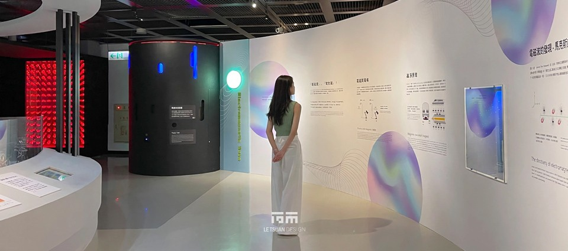
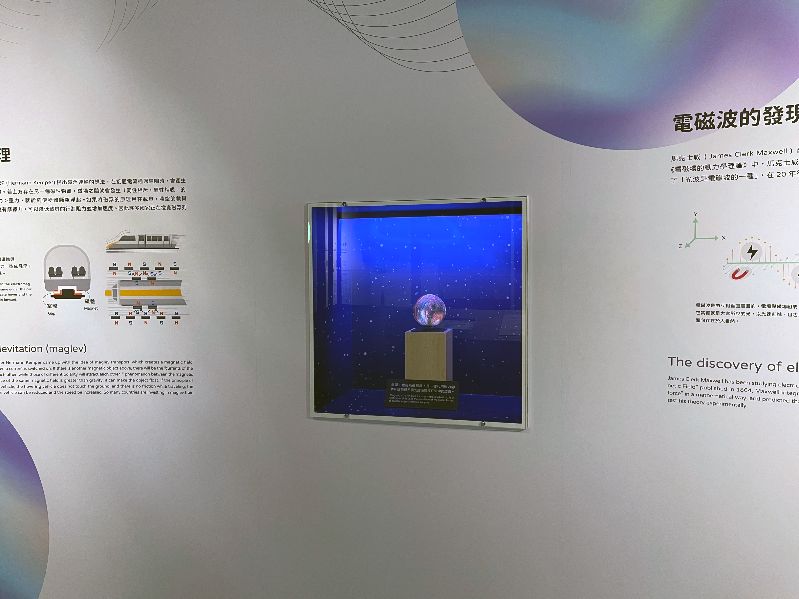
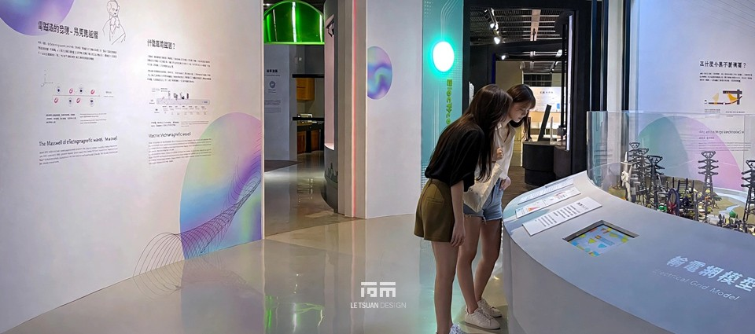
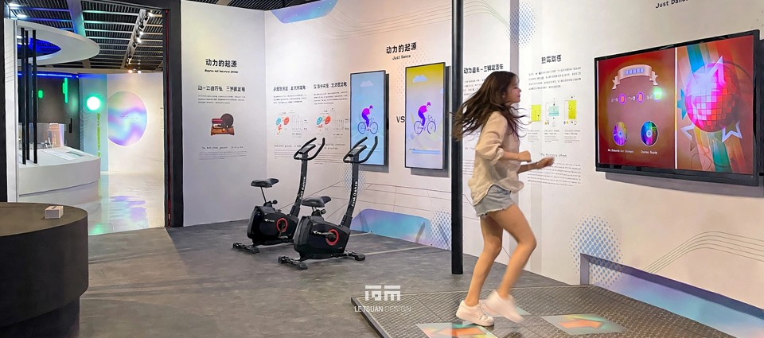
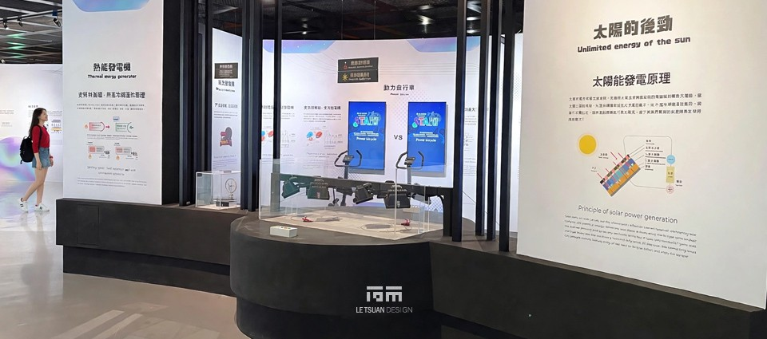
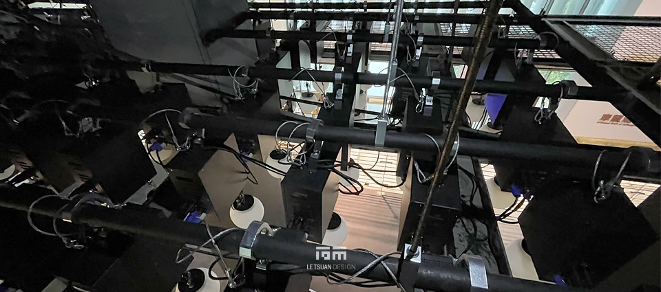

消失的科學家，
藏在限制裡的設計 電磁視界2.0
車籠埔斷層保存園區地質科學館2F，一座長年向大眾解釋「高壓電塔其實沒那麼可怕」的科普展場，走過六年，需要一次真正的重生。2023年，「電磁視界2.0：消失的科學家」在原址上重新開幕–但這不是一次推倒重來的工程。八大分區裡，哪些設備該留、哪些該讓路給新故事，才是整個案子從第一天就要回答的問題。
我們承接這項委託專業服務採購案，負責電磁物理展品製作與更新、展示設計及展場營造，全案自進場至驗收，橫跨疫情期間的種種限制，最終讓一整層樓從1.0走進了2.0。
不是全拆，是找出該留下的東西
拆除平面圖攤開來，被圈起來要動工的，其實只是館內的一小部分。這不完全是設計上的選擇–公部門標案的預算有限，全館拆除重做從一開始就不在選項裡。大多數既有結構與動線，我們選擇原封不動地保留下來，這意味著每一項新設計，都得學會在既有的骨架裡找位置，用有限的預算做出最大的翻新效果，而不是清空重來。
入口意象區的特斯拉線圈與無限鏡牆，就是最好的例子。這兩件設備本身沒有壞，拆掉重做只是浪費–我們選擇保留它們的互動教具功能，重新設計外部包裝與情境敘事，讓參觀者一走進來，就自然而然被帶入「消失的科學家」的故事裡，渾然不覺自己踩過的，其實是六年前就存在的設備。「電流大戰」光雕投影也是同樣的思路：愛迪生與特斯拉這兩位科學史上的老對手，投影內容原封不動保留，我們只是把兩人重新整合定位，讓新舊展區之間的科學知識不會斷成兩截。
光學展品區的列柱，原本是設計上最頭痛的問題–它擋動線、擋視覺，怎麼繞都繞不開。我們決定不繞了，直接把柱子變成展品本體：改以紅外線熱顯像技術重新設計柱列周邊動線，參觀者一繞到柱子後方，前方螢幕就浮現自己身體的熱能影像。曾經是限制的東西，變成了整區最讓人停下腳步的驚喜。
讓看不見的波，用光球跳出來
「波之舞劇場」是這次工程裡技術含量最高的一件裝置。天花板上懸吊著數十組個別馬達，各自牽引一顆光球獨立升降，透過程式同步驅動，讓整排球體以連續變化的高度排出橫波與縱波的曲線–物理課本上抽象的波形，第一次能被人抬頭看見、走進去感受。
要撐起這套系統，得先解決最基本的問題：天花板本身撐不撐得住。我們針對既有天花結構進行骨架加強，搭建衍架系統承載數十組馬達與光球的懸吊荷重，再逐一完成每個點位的定位、供電配線與連接測試。裝置最後整合了AR互動功能，參觀者能透過裝置即時辨識橫波與縱波的差異–一套裝置，同時完成了結構補強、精密機構安裝與軟硬體整合三件事。
舊設備，重新開機
六年下來，展場裡不是所有東西都還撐得住。輻射介紹、輻射頻蔽、玩轉電磁波這些互動多媒體，早已無法正常運轉；家電測試區的量測設備也因為老舊，準確度不再可靠。我們沒有把這些內容整個換掉，而是重新更新軟體、逐一校準，讓這些陪伴過無數親子觀眾的老朋友，能繼續說得出正確的科學。
樂高小創客區則多了一個意外的驚喜。除了讓孩子動手拼裝的STEAM教具體驗，我們另外委請專業樂高拼砌人員，在展區上方用積木拼出了車籠埔斷層保存園區的吉祥物、館內代表性建築，還有科學家特斯拉本人的立體造型。原本單純的親子動手做空間，突然多了一層園區識別與科學史人物的展示功能–現在這裡，除了拼樂高，也成了拍照停留的焦點。
地板、輸出、疫情，三條看不見的戰線
有些工程不會出現在展品清單上，卻同樣得完成。全區地坪重新施作環氧樹脂，我們把這項工程刻意錯開主要施工期段，避免粉塵與氣味干擾到其他工序；全區圖文美編、大圖輸出與入口意象視覺，也配合新版VIS識別系統全面更新，讓參觀者一進場就能感受到跟舊版截然不同的科技感與神秘氛圍。
而貫穿整個工期的，是一場沒有寫在設計圖上的挑戰–疫情。防疫規範限制了人員調度與現場作業的自由度，每一項工序的排程都得重新盤算。拆除、放樣、材料審核、隔間木作、配電管線、播放系統整合測試、模型進場組裝、燈光調整、地毯鋪設，這些原本就環環相扣的工序，在防疫限制下更考驗協調能力。最終，我們仍在預定工期內完成了整體驗收。
29家夥伴，一起把科學館重新打開
這場工程從來不是一個人能扛下來的。專業拆除、環保清運、玻璃施工、多媒體設備安裝、美術輸出貼工、鐵件製成–29家協力廠商，各自守住工序的一環；館方策展團隊確認展示內容文案與互動軟體規格；設計單位會同進行播放系統定位測試。
從局部拆除的取捨，到既有設備的重新包裝，再到把限制翻轉成亮點–電磁視界2.0留下的，不只是一座更新後的展場，更是一套在有限拆除範圍與疫情限制下，依然把每一件事做完整的方法





